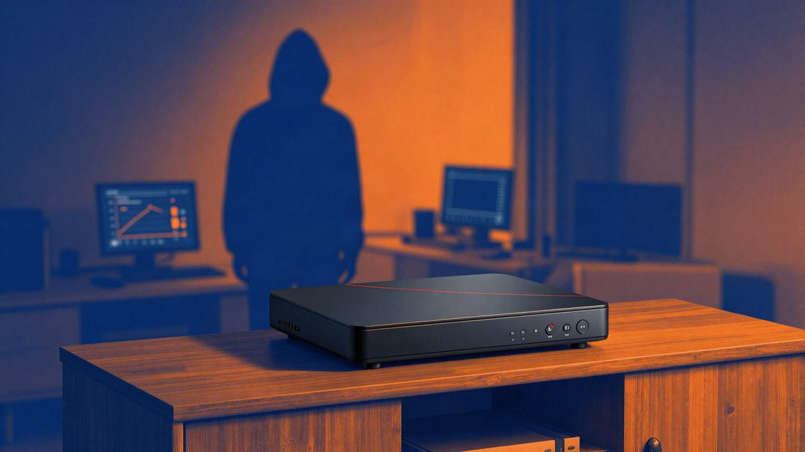

Google je prekinuo suradnju s Videostrongom zbog backdoora u certificiranim Android TV uređajima

Google je prekinuo suradnju s kineskim proizvođačem Videostrong, koji je u certificirane Android TV uređaje navodno godinama ugrađivao skriveni backdoor. Google tvrdi da je pravnim putem ugasio kontrolnu infrastrukturu botneta XCPE i da je time od napadača odsjekao još najmanje 10 milijuna uređaja. Videostrongu je zabranjena i buduća proizvodnja certificiranih Android uređaja.
Google je prekinuo svu suradnju s Videostrongom iz Shenzhena, koji je u Android TV uređaje s Googleovim certifikatom ugrađivao skriveni backdoor. Google tvrdi da je Videostrong pristup zaraženim uređajima prodavao trećim stranama za distribuciju malwarea. Videostrongu i povezanim tvrtkama zabranjena je i buduća proizvodnja certificiranih Android uređaja s ugrađenim Googleovim aplikacijama.
Google tvrdi da nije riječ o pogrešci pojedinog zaposlenika ni o slučajnom propustu u razvoju. Istraga je pokazala da sustav radi godinama, s vlastitom infrastrukturom za upravljanje uređajima, partnerima i zlonamjernim modulima te s mehanizmima za izbjegavanje detekcije koji se stalno ažuriraju.
Kako je backdoor prošao certifikaciju
Skriveni kod bio je ugrađen u uređaje već pri izlasku iz tvornice, ali zamućen (obfuskiran). Zlonamjerni moduli preuzimali su se ili aktivirali tek kad bi korisnik prvi put pokrenuo uređaj. Zbog toga su proizvodi prošli testove kompatibilnosti i sigurnosti te dobili certifikat. Google priznaje da je u certifikacijskom postupku postojala rupa koju je proizvođač iskoristio. Kaže da nadograđuje provjere i jače verificira firmware i ponašanje softvera nakon instalacije.
Koji su uređaji pogođeni
Prema sigurnosnim istraživačima, zaraženi su uglavnom Android TV i Google TV set-top boxevi, a među najviše pogođenima navodi se brend Mecool. Isti zlonamjerni sastojci pronađeni su i na nekim digital signage uređajima, karaoke uređajima i terminalima za telemedicinu.
Pravne mjere i procjena opsega
Google je pokrenuo pravni postupak protiv domena i poslužitelja kojima se upravljalo botnetom XCPE i prekinuo kontrolne veze. Videostrongu i povezanim tvrtkama zabranjeno je i pružanje softverskih usluga drugim proizvođačima certificiranih Android uređaja. Prema Googleovoj procjeni, akcija je uz već potvrđene zaražene uređaje od napadača odsjekla još najmanje 10 milijuna uređaja.
Backdoor se mogao koristiti za instalaciju dodatnog malwarea, oglašivačke prijevare, izgradnju proxy mreža i druge oblike kriminala. Zbog visokih sistemskih ovlasti zaraženi uređaji mogli su postati dio velikog botneta i napadačima davati mrežne resurse bez znanja vlasnika.
Google ističe da je namjerna prodaja uređaja s backdoorom ozbiljna povreda povjerenja potrošača. Rizik je nakon gašenja kontrolnih poslužitelja znatno manji, ali vlasnicima pogođenih proizvoda Google i dalje preporučuje da provjere podrijetlo uređaja i razmisle o zamjeni pouzdanijim brendom.
Slučaj se ubraja među najozbiljnije incidente u opskrbnom lancu Android TV platforme, upravo zato što su uređaji imali službeni Googleov certifikat.
Izvor: cnBeta
Povezani članci
 Viralni video u Kini pokrenuo raspravu: treba li starijima kupiti iPhone26. listopada 2026.
Viralni video u Kini pokrenuo raspravu: treba li starijima kupiti iPhone26. listopada 2026. Yangwang U9X je dosegnuo 503,17 km/h na cesti u Abu Dhabiju i postao najbrži serijski automobil6. studenoga 2026.
Yangwang U9X je dosegnuo 503,17 km/h na cesti u Abu Dhabiju i postao najbrži serijski automobil6. studenoga 2026. Ransomware napada Synology NAS uređaje, hakeri iskorištavaju poznate ranjivosti31. listopada 2026.
Ransomware napada Synology NAS uređaje, hakeri iskorištavaju poznate ranjivosti31. listopada 2026.